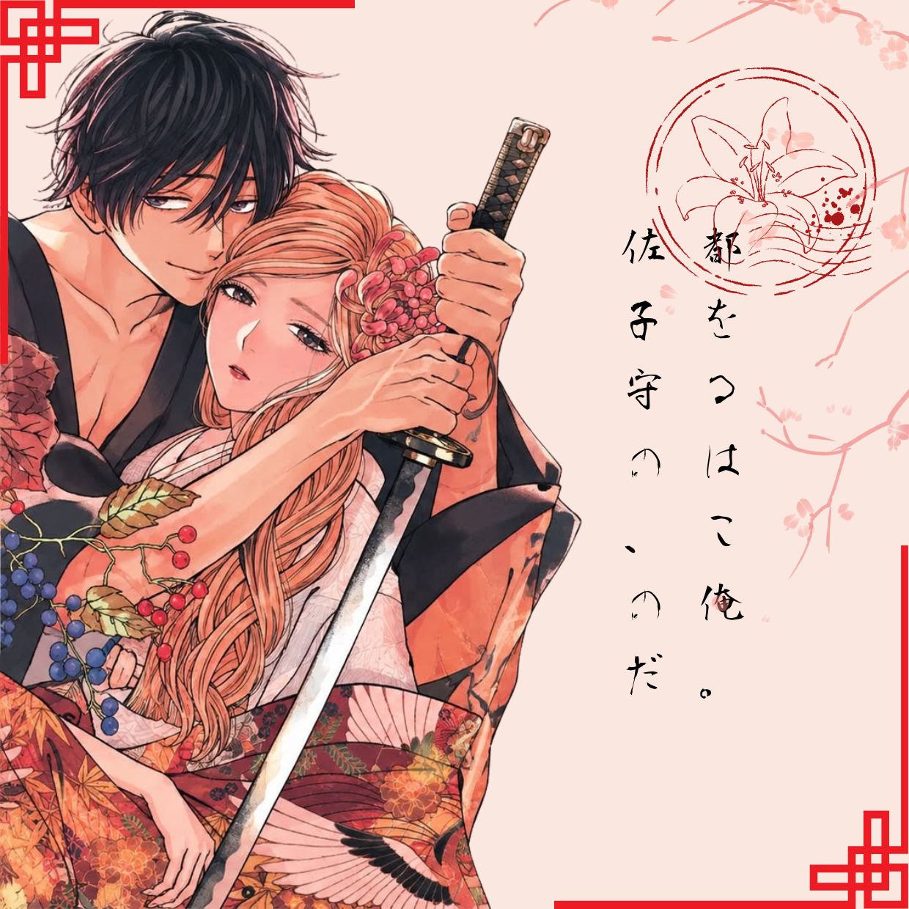

ホタルの嫁入り
คำลวงเพื่อรักษาชีวิต
กลับผูกนางไว้กับพันธะวิวาห์ ที่มิอาจถอนคืน
ยุคสมัยเมจิ ยังมีบุตรสาวขุนนางผู้แม้เกิดในสกุลดังรูปโฉมงดงาม บุญหนักศักดิ์ใหญ่หว่าถูกกล่าวกันว่าอายุสั้นอย่าง คิริงายะ ซาโตโกะ ความฝันของเธอมีเพียงการแต่งงานเพื่อผลประโยชน์ของตระกูล ครั้นซาโตโกะกลับถูกมือสังหารปริศนาหมายเอาชีวิต เพื่อรักษาชีวิตให้รอดเฉพาะหน้าเธอได้ยื่นข้อเสนอกับโกะโต ชินเป ผู้เป็นมือสังหารว่า แต่งงานกับข้าเถิดเจ้าค่ะ แต่งงานกับข้าแล้วท่านจะได้ทุกอย่างมาครอบครอง นั่นเป็นเพียงคำโป้ปดเพื่อเอาตัวรอด กระนั้นซินเปกลับเป็นซายที่มีความรักหนักหนาเหลือประมาณ... ทำให้เธอไม่อาจหนีจากการหมั้นหมายนี้ได้
เสน่ห์ที่ชวนให้อ่าน
読ませる魅力
วิวาห์แห่งหิ่งห้อยโดดเด่นด้วยการผสมผสานความรักต้องห้าม แอ็กชันและดราม่าประวัติศาสตร์ได้อย่างลงตัว เมื่อหญิงสาวขุนนางผู้มีชีวิตเปราะบางและสั้นต้องเข้ามาพัวพัน กับชายหนุ่มมือสังหาร ความสัมพันธ์ที่เริ่มต้นจากพันธสัญญา กลับค่อยๆแปรเปลี่ยนเป็นความรักที่ต้องเผชิญทั้งโชคชะตา ความรุนแรงและข้อจำกัดของสังคมในยุคเมจิ
เสน่ห์สำคัญของเรื่องไม่ได้มีเพียงความรักที่หวานซึ้ง แต่ยังสอดแทรกความรักอันเข้มข้น บิดเบี้ยว และสุดโต่ง ของตัวละคร ทำให้ความสัมพันธ์เต็มไปด้วยทั้งความหวาน ความเจ็บปวดและความคาดเดาไม่ได้ ขณะเดียวกันฉากหลังของยุคเมจิยังช่วยเพิ่มความเข้มข้นให้เรื่องราว ทั้งฉากต่อสู้ ความขัดแย้ง และโชคชะตาที่ดูเหมือนจะพราก ทั้งสองออกจากกัน

ลายเส้นและงานภาพ
作画とアート
.png)
เสน่ห์ของ วิวาห์แห่งหิ่งห้อย ไม่ได้อยู่แค่เรื่องราวความรักอันเข้มข้น แต่ยังซ่อนอยู่ในลายเส้นที่ถ่ายทอดอารมณ์ได้อย่างมีพลัง ทั้งแววตาที่สื่อความรู้สึกโดยไม่ต้องเอ่ยคำพูด สีหน้าที่เผยให้เห็นความเปราะบาง ไปจนถึงฉากที่เต็มไปด้วยความกดดัน ทุกช่องภาพล้วนช่วยขับเน้นความรู้สึกของตัวละครให้ชัดเจนยิ่งขึ้น
อีกหนึ่งจุดที่น่าประทับใจคือการออกแบบตัวละครและเครื่องแต่งกายที่มีกลิ่นอายญี่ปุ่นในอดีต ผสานกับการจัดองค์ประกอบภาพที่สลับระหว่างความอ่อนโยนและความตึงเครียดได้อย่างลงตัว ทำให้บรรยากาศของเรื่องมีทั้งความงดงามและความน่าหวั่นใจในเวลาเดียวกัน
หากคุณชอบมังงะที่ภาพไม่ได้มีไว้แค่เล่าเรื่อง
แต่ยังทำให้รู้สึกเหมือนได้สัมผัสอารมณ์ของตัวละครด้วย
ตัวเอง เรื่องนี้คืออีกเรื่องที่ไม่ควรพลาด
สายไหนไม่ควรพลาด?
誰におすすめ？
สายพีเรียดญี่ปุ่น
เหมาะกับคนที่ชื่นชอบบรรยากาศญี่ปุ่นในอดีต เครื่องแต่งกายแบบดั้งเดิม และเรื่องราวที่มีกลิ่นอายของประวัติศาสตร์ญี่ปุ่น
สายดาร์กโรแมนซ์
เหมาะกับคนที่ชอบความรักที่ไม่ได้มีแค่ความหวาน แต่ยังเต็มไปด้วยความอันตราย ความหมกมุ่น และความสัมพันธ์ที่คาดเดาไม่ได้
สายดราม่าเข้มข้น
เหมาะกับคนที่ชอบเรื่องราวที่ตัวละครต้องเผชิญสถานการณ์บีบคั้น มีเดิมพันสูง และต้องตัดสินใจท่ามกลางความรักกับการเอาชีวิตรอด